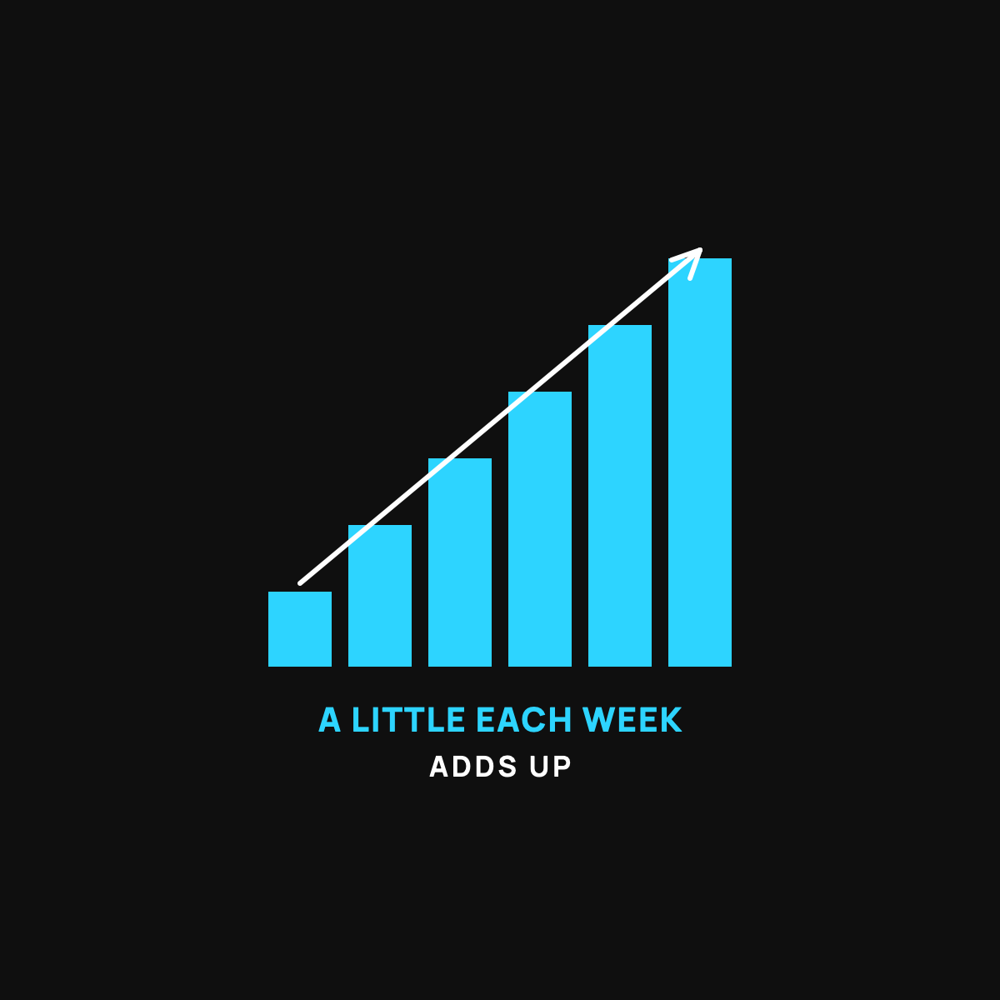

A Little Each Week Beats Betting It All
Dollar-cost averaging, explained like a dripping faucet.
Dollar-cost averaging means buying a small, fixed amount on a regular schedule instead of betting it all on one day. Your fixed amount buys more when the price is low and less when it's high, without you ever having to be clever. Pick a boring amount, make it automatic, and stop watching the price.

There's a calm way to buy something that jumps around in price, and it removes almost all the stress. You don't try to nail the perfect moment. You buy a little on a regular schedule and let time do the work. It has a clunky name, dollar-cost averaging, but the idea is as simple as a dripping faucet.
The bathtub, not the bucket
Say you want to fill a bathtub. You could dump in one giant bucket all at once. If the water's cold, you're stuck with a cold tub. Timing was everything, and you only got one shot.
Or you could let the faucet run a steady trickle. Some of the water's cold, some warm, but it all averages out, and you never had to stand there guessing the perfect second to dump the bucket.
Buying a little each week is the steady trickle. Betting it all at once is the bucket. The trickle takes the pressure off, because no single moment decides your fate.
Why this beats trying to time it
When you buy a little on a set schedule, something nice happens automatically. When the price is high, your fixed amount buys a little less. When the price is low, that same amount buys more. You end up buying more when it's cheap and less when it's dear, without ever having to be clever about it.
Nobody, and I mean nobody, reliably calls the perfect moment. Not the pros on TV, not your brother-in-law. Timing the market is a game the calm saver just refuses to play. I wrote about why I don't try to time the price here.
How to actually do it
Pick an amount so small it's boring. Ten dollars a week. Twenty-five a paycheck. An amount that, if it vanished, wouldn't dent your life. Set it to repeat automatically. Then, and this is the hard part, ignore it. Don't check the price every day. The whole point is to stop watching.
If you've never bought any at all, I walked through the very first step, start to finish, here.
The honest catch
A steady trickle protects you from bad timing. It does not protect you from the thing itself going down. If what you're buying loses value over the long run, buying it slowly just means you lost slowly. So this is a method, not a magic wand. Only put in money you won't need soon and can afford to watch swing around. The saving-versus-gambling line still applies, and I keep it honest here.
The takeaway
A little each week beats betting it all, because it takes timing off the table. Be the steady faucet, not the one big bucket. Pick a boring amount, make it automatic, and stop watching the price. Calm beats clever more often than anyone admits.
Questions I get about this
Is dollar-cost averaging better than buying all at once?
It's calmer, and calm wins for most normal people. A lump sum can land on a great day or a terrible one, and you only get one shot. A steady trickle takes timing off the table, so no single moment decides your fate.
How much should I put in each week?
An amount so small it's boring. Ten dollars a week. Twenty-five a paycheck. Money that, if it vanished, wouldn't dent your life. Then set it to repeat and ignore it.
Does buying a little each week protect me from losing money?
No. It protects you from bad timing, not from the thing itself going down. If what you're buying loses value over the long run, buying slowly just means you lost slowly. It's a method, not a magic wand, so only use money you won't need soon.
New here?
Normaltown USA is plain-English money and healthcare help for normal people, written by a regular guy with a family of four. No jargon, no hype. Start here, or read the FAQ.